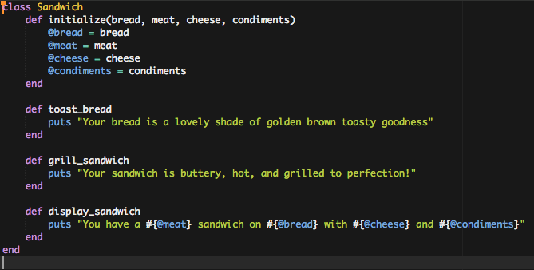
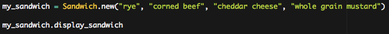

Ruby is an OOP language (Object-Oriented Programming), but what does that mean? What are the other options? Well, back in the day, programming languages were mostly Procedural Programming, which is a fancy way of saying that you created a list of instructions telling the computer what to do step-by-step. Procedural programming relies on these step-by-step procedures to get all of its work done. Some examples of of early procedural programming langues include Fortran, C, and COBOL.
Object-Oriented Programming, or OOP, is different in that all of the work happens within and between things called objects. Of course, they aren't physical objects - it's all just code - but this is a fundamentally different way at looking at functionality. Objects allow us to model things off of real life objects and how they interact. Objects in OOPs have attributes (called instance varibales) and behaviors (we call them methods).
Let's say we wanted to make a sandwich, a ham and swiss cheese on a baguette. In procedural programming we would write a bunch of code going through how to make a sandwich covering each and every step. This code would work fine for building the original ham sandwich we set out to make, but procedural programming doesn't give us flexibility; we can't use it to make a corned beef of rye sandwich because that would require taking different steps. The concept of objects and the Classes they are part of make OOPs much more flexible.
Programs like Ruby and other OOPs allow us to create Classes. Think of a class as being the blueprint for an object, like a sandwich, for example. Now, a class is not in and of itself a useful object - it is just the outline. But, we can use that blueprint outline to make an instance of that class, and that instance is an object. An important thing to keep in mind with OOP is you want to think about abstraction, because remember we want to create a blueprint that will help us to make many different kinds of objects, as long as they fit into that abstract class we are creating. So let's create a Class Sandwich!
Objects in real life have properties or attributes, and they also have things that you can do to them, or sometimes things that they can do (to you, or other objects), too. We want to make a blueprint for a sandwich, so let's think about some things that are common properties or attributes of all sandwiches.
- Kind of bread
- Meat or Veggie for the middle
- Cheese or no cheese, and what kind
- Condiments
- Mayo
- Mustard
- BBQ sauce
And what can do to a sandwich? Or what can a sandwich do to anything else (well, not much really...)
- Toast the sandwich
- Grill the sandwich
- Serve as is, cold
That seems like a good start! We have made a list of the basic properties or building blocks of a sandwich and we have listed some ideas about what we can do to this sandwich. Now it's time to turn this into a Ruby Class that we can make instances (objects) out of.
Now we can make our own sandwiches something like this :
And when we call our method to display the sandwich we will get this...
Now of course this is sort of a silly example. It's pretty unlikely you'd ever need to build a class like this, but the point is that with a little thought, you can turn almost any real-world object into a class. They key is to remember that you want to create a blueprint to make objects out of, not the object itself. For example, had we decided to make a class Ham_Sandwich, it wouldn't very useful for making anything except just a ham sandwich. However, by thinking about the more abstract level, that a ham sandwich is part of a larger family of sandwiches, we can create a class from which we can create dozens of varieties of sandwich objects.